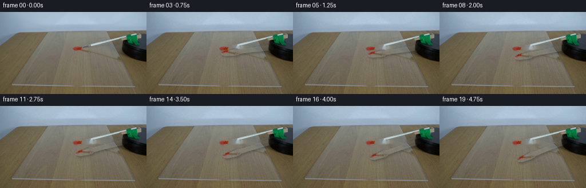
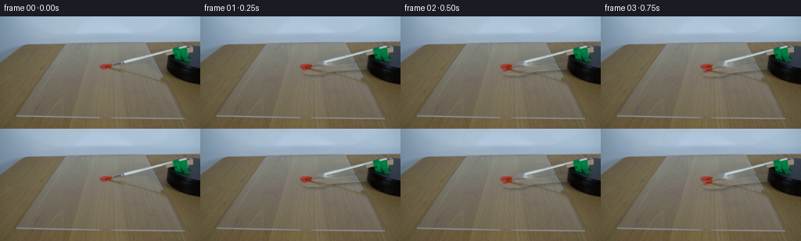
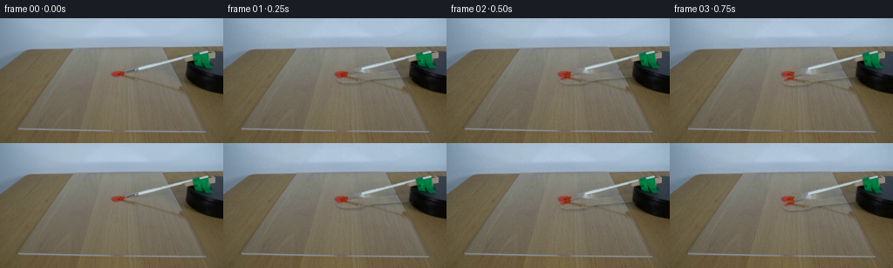
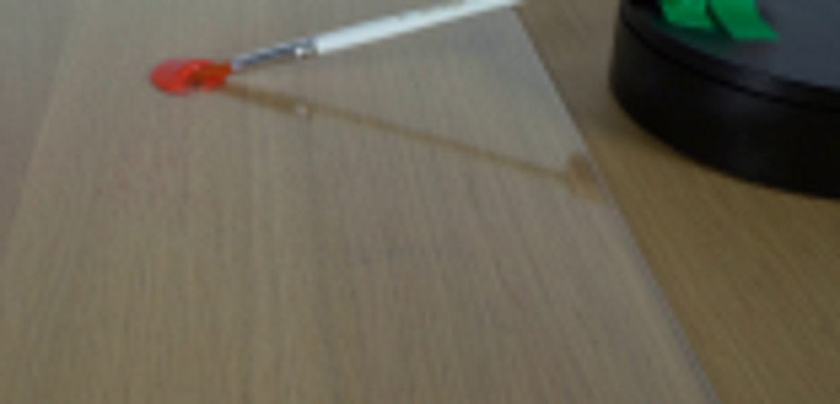
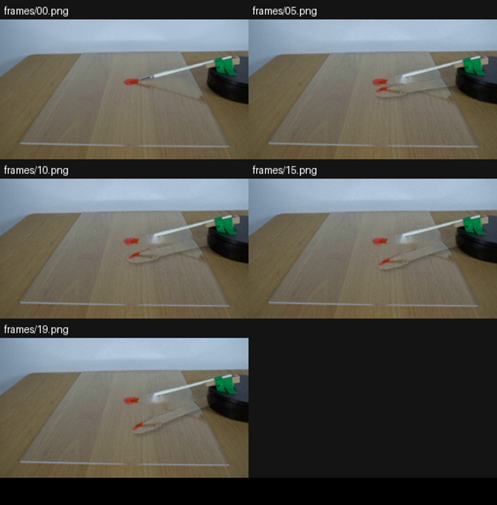
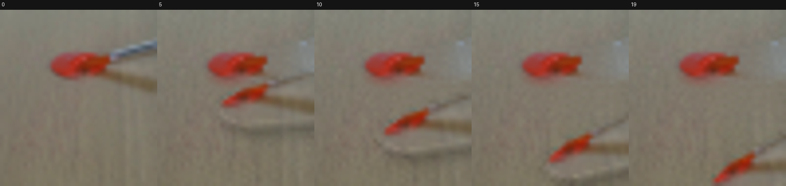
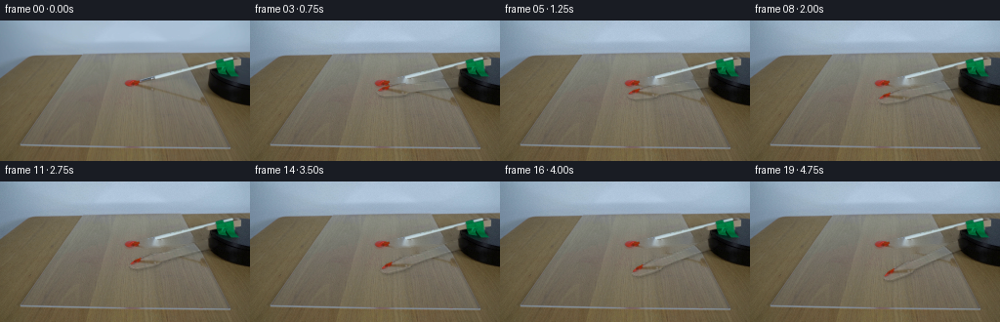

CODING AGENTS AS PIXEL WORLD MODELS
traex/DeepSeek-V4.1-Flash · 0131
点击播放 · 原生 RGB 像素
逐轮保存的候选
回放视频、检查图与代码变化。
每份候选均可单独播放。实际图片检查记录在下方工具轨迹中。
候选 01播放与检查图
点击播放 · 原生 RGB 像素


展开代码变化
--- 上一保存版本
+++ 本次保存版本
@@ -0,0 +1,155 @@
+"""Generate the locked-off paintbrush demonstration from first_frame.png."""
+
+from pathlib import Path
+
+import cv2
+import numpy as np
+from PIL import Image
+
+import artifact_io
+
+
+CASE_DIR = Path(__file__).resolve().parent
+FRAME_COUNT = 20
+FPS = 4
+PIVOT = np.array([219.5, 62.0], dtype=np.float32)
+TOTAL_ROTATION_DEG = 18.0
+
+
+def capsule_distance(
+ height: int, width: int, start: np.ndarray, end: np.ndarray
+) -> np.ndarray:
+ yy, xx = np.mgrid[:height, :width].astype(np.float32)
+ point = np.stack((xx, yy), axis=-1)
+ segment = end - start
+ length_sq = float(segment @ segment)
+ projection = np.clip(
+ ((point - start) @ segment) / length_sq,
+ 0.0,
+ 1.0,
+ )
+ closest = start + projection[..., None] * segment
+ return np.linalg.norm(point - closest, axis=-1)
+
+
+def make_brush_alpha(height: int, width: int) -> np.ndarray:
+ """A tapered capsule matte matching the visible brush silhouette."""
+ tip = np.array([129.0, 68.5], dtype=np.float32)
+ pivot = np.array([220.5, 61.5], dtype=np.float32)
+ yy, xx = np.mgrid[:height, :width].astype(np.float32)
+ point = np.stack((xx, yy), axis=-1)
+ axis = pivot - tip
+ length = float(np.linalg.norm(axis))
+ unit = axis / length
+ along = np.clip(((point - tip) @ unit) / length, 0.0, 1.0)
+
+ # Half-width measured from tip to the platform attachment.
+ stations = np.array(
+ [0.00, 0.025, 0.08, 0.25, 0.32, 0.35, 0.48, 0.78, 0.95, 1.00],
+ dtype=np.float32,
+ )
+ half_widths = np.array(
+ [0.8, 2.6, 4.7, 6.0, 5.8, 4.2, 3.7, 4.3, 5.0, 4.2],
+ dtype=np.float32,
+ )
+ half_width = np.interp(along, stations, half_widths)
+ perpendicular = np.abs((point - tip) @ np.array([-unit[1], unit[0]]))
+ signed_distance = perpendicular - half_width
+ alpha = np.clip(0.75 - signed_distance, 0.0, 1.0)
+ alpha[along <= 0.0] = 0.0
+ alpha[xx > 222.0] = 0.0
+ return alpha.astype(np.float32)
+
+
+def make_paint_alpha(source: np.ndarray) -> np.ndarray:
+ """Isolate the red dollop, including its softened edge."""
+ height, width = source.shape[:2]
+ yy, xx = np.mgrid[:height, :width]
+ roi = (xx >= 123) & (xx <= 147) & (yy >= 61) & (yy <= 80)
+ rgb = source.astype(np.float32)
+ redness = rgb[..., 0] - 0.72 * rgb[..., 1] - 0.28 * rgb[..., 2]
+ alpha = np.clip((redness - 18.0) / 38.0, 0.0, 1.0) * roi
+ alpha = cv2.GaussianBlur(alpha, (0, 0), 0.45)
+ return alpha.astype(np.float32)
+
+
+def make_clean_plate(source: np.ndarray, brush_alpha: np.ndarray) -> np.ndarray:
+ """Inpaint the brush, then restore the stationary paint dollop."""
+ removal = (brush_alpha > 0.02).astype(np.uint8) * 255
+ removal = cv2.dilate(
+ removal,
+ cv2.getStructuringElement(cv2.MORPH_ELLIPSE, (5, 5)),
+ iterations=1,
+ )
+ # Keep the visible platform attachment and green clamp intact.
+ removal[:, 220:] = 0
+ clean = cv2.inpaint(source, removal, 3.0, cv2.INPAINT_TELEA)
+
+ # Fine vertical grain keeps the inpainted acrylic from looking like a blur.
+ rng = np.random.default_rng(131)
+ grain = rng.normal(0.0, 1.25, size=(source.shape[0], source.shape[1], 1))
+ clean = np.clip(clean.astype(np.float32) + grain, 0.0, 255.0).astype(np.uint8)
+
+ paint_alpha = make_paint_alpha(source)
+ a = paint_alpha[..., None]
+ return (
+ source.astype(np.float32) * a + clean.astype(np.float32) * (1.0 - a)
+ ).astype(np.uint8)
+
+
+def rotate_about_pivot(
+ image: np.ndarray, angle_deg: float, pivot: np.ndarray
+) -> np.ndarray:
+ matrix = cv2.getRotationMatrix2D(
+ (float(pivot[0]), float(pivot[1])), angle_deg, 1.0
+ )
+ return cv2.warpAffine(
+ image,
+ matrix,
+ (image.shape[1], image.shape[0]),
+ flags=cv2.INTER_CUBIC,
+ borderMode=cv2.BORDER_CONSTANT,
+ borderValue=0,
+ )
+
+
+def render_frame(
+ source: np.ndarray,
+ clean: np.ndarray,
+ brush_alpha: np.ndarray,
+ angle_deg: float,
+) -> np.ndarray:
+ premultiplied = source.astype(np.float32) * brush_alpha[..., None]
+ warped_color = rotate_about_pivot(premultiplied, angle_deg, PIVOT)
+ warped_alpha = rotate_about_pivot(brush_alpha, angle_deg, PIVOT)
+ warped_alpha = np.clip(warped_alpha, 0.0, 1.0)
+
+ shadow_source = cv2.GaussianBlur(brush_alpha, (0, 0), 1.25)
+ shadow = rotate_about_pivot(shadow_source, angle_deg, PIVOT)
+ shadow = np.roll(shadow, shift=(3, 2), axis=(0, 1))
+ shadow = cv2.GaussianBlur(shadow, (0, 0), 0.9)
+
+ out = clean.astype(np.float32)
+ out *= 1.0 - 0.18 * np.clip(shadow, 0.0, 1.0)[..., None]
+ a = warped_alpha[..., None]
+ out = out * (1.0 - a) + warped_color
+ return np.clip(out, 0.0, 255.0).astype(np.uint8)
+
+
+def main() -> None:
+ source = np.asarray(Image.open(CASE_DIR / "first_frame.png").convert("RGB"))
+ brush_alpha = make_brush_alpha(source.shape[0], source.shape[1])
+ clean = make_clean_plate(source, brush_alpha)
+
+ frames = np.empty((FRAME_COUNT, source.shape[0], source.shape[1], 3), np.uint8)
+ frames[0] = source
+ for index in range(1, FRAME_COUNT):
+ time_fraction = index / (FRAME_COUNT - 1)
+ angle = TOTAL_ROTATION_DEG * time_fraction
+ frames[index] = render_frame(source, clean, brush_alpha, angle)
+
+ artifact_io.save(frames, CASE_DIR)
+
+
+if __name__ == "__main__":
+ main()
候选 02播放与检查图
点击播放 · 原生 RGB 像素


展开代码变化
--- 上一保存版本
+++ 本次保存版本
@@ -13,7 +13,7 @@
FRAME_COUNT = 20
FPS = 4
PIVOT = np.array([219.5, 62.0], dtype=np.float32)
-TOTAL_ROTATION_DEG = 18.0
+TOTAL_ROTATION_DEG = 20.0
def capsule_distance(
@@ -68,7 +68,7 @@
roi = (xx >= 123) & (xx <= 147) & (yy >= 61) & (yy <= 80)
rgb = source.astype(np.float32)
redness = rgb[..., 0] - 0.72 * rgb[..., 1] - 0.28 * rgb[..., 2]
- alpha = np.clip((redness - 18.0) / 38.0, 0.0, 1.0) * roi
+ alpha = np.clip((redness - 12.0) / 34.0, 0.0, 1.0) * roi
alpha = cv2.GaussianBlur(alpha, (0, 0), 0.45)
return alpha.astype(np.float32)
@@ -126,7 +126,7 @@
shadow_source = cv2.GaussianBlur(brush_alpha, (0, 0), 1.25)
shadow = rotate_about_pivot(shadow_source, angle_deg, PIVOT)
- shadow = np.roll(shadow, shift=(3, 2), axis=(0, 1))
+ shadow = np.roll(shadow, shift=(2, 1), axis=(0, 1))
shadow = cv2.GaussianBlur(shadow, (0, 0), 0.9)
out = clean.astype(np.float32)
可观测工具轨迹
实际执行的命令与返回图片。
命令 1exit 0
/bin/bash -c "pwd && rg --files -g '"'!*.mp4'"' -g '"'!*.mov'"' | sed -n '1,160p'"
命令 2exit 0
/bin/bash -c "sed -n '1,240p' prompt.txt"
命令 3exit 0
/bin/bash -c "sed -n '1,280p' GENERATION_RULES.md"
命令 4exit 0
/bin/bash -c "ls -la && find . -maxdepth 2 -type f -printf '%p %s bytes\\n' | sort"
命令 5exit 0
/bin/bash -c "sed -n '1,260p' artifact_io.py"
命令 6exit 0
/bin/bash -c "python3 - <<'PY'
from PIL import Image
im=Image.open('first_frame.png')
im.crop((100,50,256,125)).resize((936,450)).save('.tmp/crop.png')
PY"命令 7exit 0
/bin/bash -c "python3 - <<'PY' mods=['numpy','PIL','cv2','scipy','skimage'] for m in mods: try: mod=__import__(m); print(m, getattr(mod,'__version__','ok')) except Exception as e: print(m, 'MISSING', e) PY"
命令 8exit 0
/bin/bash -c "python3 - <<'PY'
from PIL import Image
im=Image.open('first_frame.png')
print(im.size, im.mode)
# print selected RGB grid around brush
for y in range(50,96,5):
print(y, [(x, im.getpixel((x,y))) for x in range(120,251,10)])
PY"命令 9exit 0
/bin/bash -c 'python3 generate.py'
命令 10exit 0
/bin/bash -c "python3 - <<'PY'
from PIL import Image, ImageDraw
import numpy as np
files=['frames/00.png','frames/05.png','frames/10.png','frames/15.png','frames/19.png']
ims=[Image.open(f) for f in files]
out=Image.new('RGB',(256*2, 144*3+60),(20,20,20)); d=ImageDraw.Draw(out)
for i,im in enumerate(ims):
x=(i%2)*256;y=(i//2)*(144+20)+20
d.text((x+4,y-15),files[i],fill='white')
out.paste(im,(x,y))
out.crop((0,0,512,520)).resize((1024,1040)).save('.tmp/motion.png')
PY"命令 11exit 0
/bin/bash -c "python3 - <<'PY'
from PIL import Image
import numpy as np
im=np.array(Image.open('first_frame.png'))
for p in [(220,62),(221,62),(222,62),(223,62),(219,58),(219,66),(218,61),(225,61),(230,58),(230,65)]:
x,y=p; print(p,im[y,x])
PY"命令 12exit 0
/bin/bash -c "python3 - <<'PY'
from PIL import Image
import numpy as np
im=np.array(Image.open('first_frame.png'))
im[55:70,213:228]=255
Image.fromarray(im).crop((180,45,245,80)).resize((780,420)).save('.tmp/pivot.png')
PY"命令 13exit 0
/bin/bash -c "python3 - <<'PY'
from PIL import Image
im=Image.open('first_frame.png')
im.crop((196,48,226,77)).resize((600,580)).save('.tmp/pivot_clean.png')
PY"命令 14exit 0
/bin/bash -c "python3 - <<'PY'
from PIL import Image
import numpy as np
im=np.array(Image.open('first_frame.png')).astype(int)
# red mask summary
roi=im[58:83,120:152]
for y in range(58,83):
xs=[]
for x in range(120,152):
r,g,b=im[y,x]
if r-g>30 and r-b>25: xs.append(x)
if xs: print(y,min(xs),max(xs),len(xs))
PY"命令 15exit 0
/bin/bash -c "python3 - <<'PY'
from PIL import Image
import numpy as np
im=np.array(Image.open('first_frame.png'))
im[40:90,95:160]=255
Image.fromarray(im).crop((90,35,165,95)).resize((900,720)).save('.tmp/paint_mask.png')
PY"命令 16exit 0
/bin/bash -c "python3 - <<'PY'
from PIL import Image
for i in [0,5,10,15,19]:
im=Image.open(f'frames/{i:02d}.png')
im.crop((115,50,155,95)).resize((320,360)).save(f'.tmp/zoom{i:02d}.png')
PY"命令 17exit 0
/bin/bash -c "python3 - <<'PY'
from PIL import Image,ImageDraw
out=Image.new('RGB',(320*5,380),(20,20,20));d=ImageDraw.Draw(out)
for j,i in enumerate([0,5,10,15,19]):
im=Image.open(f'.tmp/zoom{i:02d}.png');out.paste(im,(j*320,20));d.text((j*320+4,3),str(i),fill='white')
out.save('.tmp/zoom_all.png')
PY"命令 18exit 0
/bin/bash -c "python3 generate.py && python3 - <<'PY'
from PIL import Image
import numpy as np
src=np.array(Image.open('first_frame.png'))
out=np.array(Image.open('frames/00.png'))
print('frame0 exact', np.array_equal(src,out), 'shape',out.shape)
print('changed adjacent frame1 px',np.count_nonzero(np.any(out "'!= np.array(Image.open('"'frames/01.png')),axis=2)))
PY"命令 19exit 0
/bin/bash -c "python3 - <<'PY'
from PIL import Image
import numpy as np
for i in range(1,20):
a=np.array(Image.open(f'frames/{i-1:02d}.png')).astype(int)
b=np.array(Image.open(f'frames/{i:02d}.png')).astype(int)
d=np.abs(a-b)
print(i, int((d>4).any(2).sum()), round(float(d.mean()),2), int(d.max()))
PY"命令 20exit 0
/bin/bash -c "python3 - <<'PY'
import json, zipfile
from pathlib import Path
import numpy as np
from PIL import Image
p=Path('pixels.npz')
with np.load(p) as z:
pix=z['pixels']
print('npz',pix.shape,pix.dtype)
frames=sorted(Path('frames').glob('*.png'))
print('frames',len(frames),set(Image.open(f).size for f in frames))
print('html bytes',Path('index.html').stat().st_size)
print('first exact',np.array_equal(np.asarray(Image.open('frames/00.png')),np.asarray(Image.open('first_frame.png'))))
PY"视觉工具实际返回图片 1

视觉工具实际返回图片 2

视觉工具实际返回图片 3

视觉工具实际返回图片 4

视觉工具实际返回图片 5
视觉工具实际返回图片 6
视觉工具实际返回图片 7
视觉工具实际返回图片 8

视觉工具实际返回图片 9

保存候选 2 份；完成命令 20 次；可验证图片返回 9 张。原始 API 响应与完整日志保留在本地。